graph TD
A[Studiedesign] -->|Manipulera| B[fa:fa-flask Experimentell]
A -->|Observera| C[fa:fa-eye Observationell]
B --> |Följ upp| D[fa:fa-hospital Klinisk prövning]
C --> |Följ INTE upp| E[fa:fa-user-clock Tvärsnittstudie]
C --> |Följ upp| F[fa:fa-calendar-alt Longitudinell]
F --> G[fa:fa-users Kohortstudie]
F --> H[fa:fa-user-friends Fall-kontroll-studie]
Hälsovetenskaplig statistik
LPG010 (V26)
Erik Bülow
Avdelningen för samhällsmedicin och folkhälsa
1 Formalia
Upplägg
- Föreläsningar
-
3 stycken (studiedesign, deskriptiv statistik, tester, regression etc).
- Projektplaneringsseminarium
-
Statistiker deltar
- Datorövningar
-
anmäls i förväg via Canvas
-
SPSS-introduktion
-
Frågeformulär – design och analys
-
Statistiska test: t-test, ANOVA, icke-parametriska test
-
Regressionsanalys
-
R
- Workshops
-
Bokas i förväg vid 2 tillfällen
-
Jobba med din egen data till projektet
Viktigt!
- Det räcker inte att gå på föreläsningarna!
- Gå igenom föreläsningsbilder + rekommenderad litteratur + Jon och Agnes statistikskola.
- Du kommer också behöva praktisk övning: försöka lösa övningarna i boken och delta vid datorsessioner
- Just ditt projekt kanske kräver andra metoder än de som tas upp här (eller går det att förenkla?).
Rekommenderad litteratur
Youtube
2 Intro
Varför statistik?
- Exempel: Förekomst av hjärt- och kärlsjukdomar via
stickprov- Landsbyggd: 91 av 4 920 = 1,85%
- Stad: 64 av 4965 = 1,29 %
- Hur tolkar vi dessa resultat?
- Tror du att det finns ett samband mellan boende och CVD?
Därför statistik!
Oberoende variabel/prediktor = Bosättningsort (stad/landsbygd)Beroende variabel/utfall = CVD (Ja eller Nej)
| CVD | Inte CVD | Totalt | |
|---|---|---|---|
| Landsbygd | 91 (1,9 %) | 4829 | 4920 |
| Stad | 64 (1,3 %) | 4901 | 4965 |
- Skillnad i andel = \(0,5\)
procentenheter - 95 %
konfidensintervall: \((0,07~\%; 1,05~\%)\) - \(\chi^2\)-
test(\(p = 0,02\)) - Är detta kliniskt relevant?
Totalundersökning
- Nu med hela Sveriges befolkning (vid ngn tidpunkt)
| CVD | Totalt | Förväntat | |
|---|---|---|---|
| Landsbygd | \(45~276~(1,9~\%)\) | \(2~447~909\) | \(36~572~(1,5~\%)\) |
| Stad. | \(54~744~(1,3~\%)\) | \(4~246~925\) | \(63~449~(1,5~\%)\) |
- 8 705 fler fall i stad jmfrt. förväntat om lika risk (45276 - 36572)
- \(\chi^2 = 3315,73\)
- \(P = 0,00000...\)
Vad är statistik?
Vetenskap som studerar de metoder som krävs för att sammanställa, analysera och tolka
data.Inom forskningen kan statistisk teori användas som en hjälp när man konstruerar studier, samlar in data och drar slutsatser.
Hälsovetenskaplig statistikhandlar om tillämpningar av statistik inom medicin, hälsovetenskap, epidemiologi, odontologi …
Matematisk statistik
Matematisk statistikär en gren inom matematik.- Inom
statistiktillämpas metoder från matematisk statistik. - “Stat” i statistik kommer från en tillämpning inom statsvetenskap etc.
Varför statistik?
Det finns en
variationi dataPraktiskt och/eller etiskt omöjligt att samla in data från hela befolkningen
Hur hanterar man
osäkerheti ett stickprov?Hur använder man det vi observerar i ett
urvalför att dra slutsatser om enpopulation?
3 Population och urval
Population och urval
PopulationUrvalsram(Sampling frame)Urval(Sample)Urvalsenhet(Sampling observation)Urvalsmetod(Sampling method)Bortfall(Drop out)
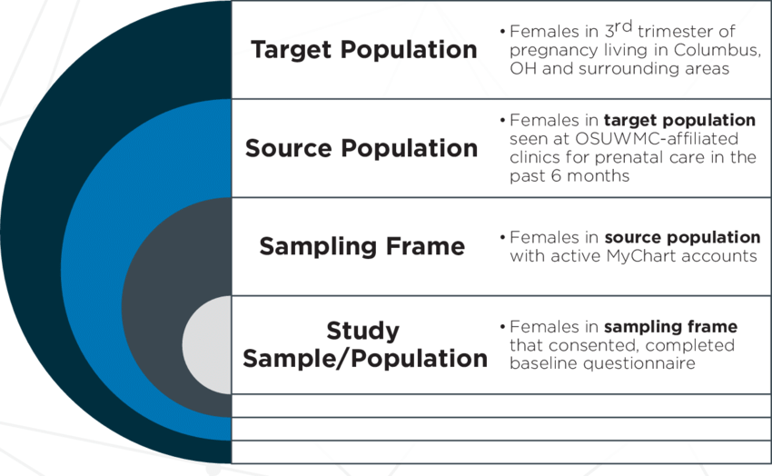
Över- och undertäckning
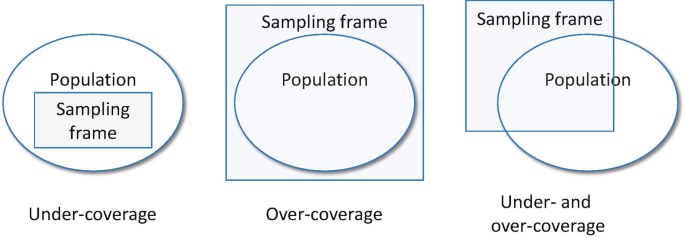
Hanteras via inklusions- och exklusionskriterier.
Urvalsmetoder
- Obundet slumpmässigt urval
- Systematiskt urval
- Stratifierat urval
- Klusterurval
- Frivilligt deltagande
- Snöbollsurval
- Bekvämlighetsurval
Bortfall
- Objektbortfall (individbortfall)
- Partiellt bortfall (variabelbortfall)
- Drop-out
- Systematiskt bortfall?
- Missing completely at random (MCAR)
- Halkade på bananskal och slog sönder ett provrör
- Missing at random (MAR)
- rapportering saknas från en vårdenhet
- Missing not at random (MNAR)
- Rökare vill inte berätta att de röker
Viktigt!
- Slutsatserna är aldrig bättre än urvalet.
- Var alltid tydlig med vilken eller vilka populationer din statistik är tänkt att generalisera till.
- Antyd inte att ditt urval generaliseras till alla om ditt stickprov inte var representativt för hela populationen!
- T.ex. om ditt urval endast inkluderade medicinska högskolestudenter, kan du inte generalisera dina resultat till alla studenter
4 Begrepp
Notation
- Statistik använder matematik
- Matematisk notation är ibland rena grekiskan!
- Vi undviker komplicerade formler i de flesta fall
- Några symboler återkommer dock ofta och kan vara bra att känna till
- X
-
Oberoende variabel
- Y
-
Beroende variabel
- \(i, j, k, l\)
-
Används ofta som index (naturliga tal)
- \(x_i, y_i\)
-
Specifik observation från variabel \(X, Y\)
- \(n, N\)
-
Stickprovsstorlek
- \(\Sigma\)
-
Används för summaberäkningar, t ex \(\Sigma_{i=1}^n x_i\) = summan av alla observationer från variabel \(X\)
- \(\mu\)
-
betecknar ofta ett “teoretiskt/abstrakt/okänt”
medelvärdei en population - \(\bar x\)
-
Medelvärdet av \(X\), \(\bar x = \Sigma_{i=1}^n x_i / n\)
-
Dvs, ett värde som kan beräknas utifrån observerad data
-
Approximerar \(\mu\)
- \(\sigma\)
-
betecknar ofta en “teoretisk/abstrakt/okänd”
standardavvikelsei en population - \(s\)
-
Beräknas utifrån data
-
Approximerar \(\sigma\)
- \(\alpha\)
-
Signifikansnivå (sannolikheten för typ I-fel)
-
Även intercept i Regression
- \(\beta\)
-
Sannolikheten för typ II-Fel
-
Även koefficient i regressionsmodell
Grundläggande
- Parameter
-
ett “sant” men ofta okänt värde som beskriver populationen
-
T ex: medelvärde (\(\mu\)), standardavvikelse (\(\sigma\))
- Statistika (singular)
-
ett tal som beskriver stickprovet.
-
Statistikans värde är känt när urvalet analyserats
-
varierar från stickprov till stickprov
-
T ex: medelvärdet (\(\bar x\)), standardavvikelse (\(s\))
- Parameterskattning:
-
Ofta används en statistika (eller en funktion av denna) för att göra en skattning av en okänd parameter.
-
\(\bar x \approx \mu\) och \(s \approx \sigma\)
Variabel
- Karakteristik för ett objekt som kan kvantifieras (mätas) och som kan variera, mellan eller/och inom objekt (till skillnad från en konstant som alltid har samma värde)
Oberoende variabelmäts, manipuleras eller väljs i syfte att bestämma dess relation till den beroende variabeln.- Den
beroende variabeln(utfallet) är ofta “stjärnan i showen”. - Syftet med vår studie är vanligtvis att svara på om det finns en samvariation mellan utfallsvariabeln och våra oberoende variabler.
Mätnivåer
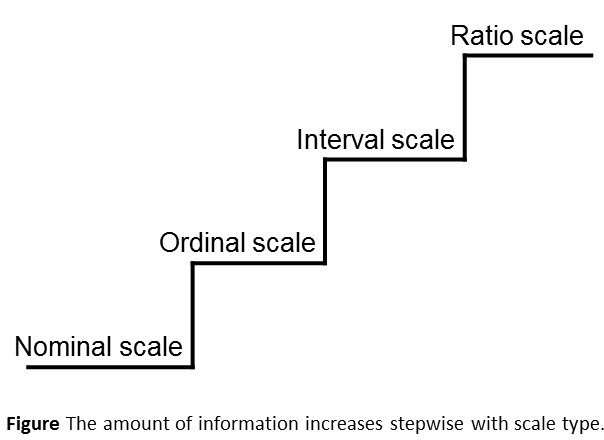
- Nominalskala (kategorisk; saknar ordnning)
-
namn, kön, färg, varumärke, …
- Ordinalskala (kategorisk; ordning)
-
Bra-Bättre-Bäst, ålderskategori, …
- Intervallskala (kvantitativ/numerisk; ordning och avstånd)
-
temperatur i celcius/Farenheit, …
- Kvotskala (kvantitativ/numerisk; ordning, avstånd, referen-/nollpunkt)
-
längd, vikt, blodtryck, …
Vilken typ av skala variablerna mäts på påverkar valet av statistiska metoder för att analysera data.
Exempel
🕚 När det är mycket att göra:
- Jobbar jag mer intensivt för att hinna med det som ska göras.
- ⬜ Väldigt ofta/alltid ⬜️ Ganska ofta ⬜️ Ibland ⬜ Ganska sällan ⬜️ Mycket sällan/aldrig
- Hoppar jag över raster eller lunch för att avsluta det som behöver göras.
- ⬜ Väldigt ofta/alltid ⬜️ Ganska ofta ⬜️ Ibland ⬜ Ganska sällan ⬜️ Mycket sällan/aldrig
- Jag sänker kvaliteten på mitt arbete för att hinna med det som ska göras.
- ⬜️ Väldigt ofta/alltid ⬜️ Ganska ofta ⬜️ Ibland ⬜ Ganska sällan ⬜️ Mycket sällan/aldrig
Är avståndet/stegen mellan olika svarsalternativ lika?
Absoluta och relativa mått
Absoluta
- tal med
enheter(t.ex. 100 cm, 13 stycken eller 5 kg). - Alla kvantitativa variabler har absoluta mått.
- Absoluta mått bör alltid innehålla måttenheten
Relativa
- talar om för oss
förhållandetmellan två mätningar med samma enhet. - Exempel: “Ungdomsarbetslösheten har minskat med 16 procent sedan förra året.”
- Relativa mått är förhållanden. Det vanligaste relativa måttet är %.
- Kan endast användas för variabler med
kvotskala. - Om möjligt, rapportera alltid absoluta mätningar tillsammans med den relativa mätningen [x % (y av z)].
5 Deskriptiv statistik
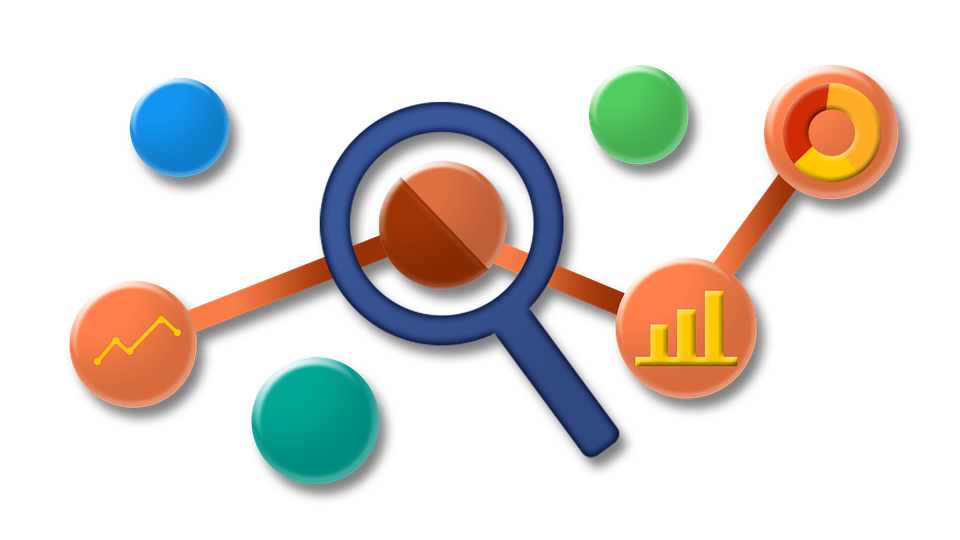
Deskriptiv statistik
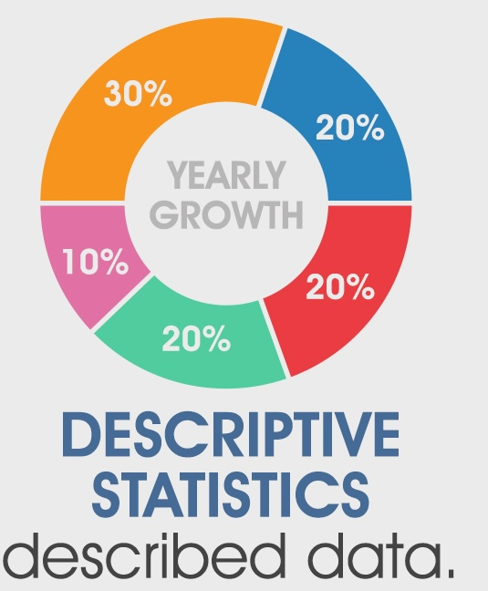
- Enkla, lättlästa, sammanfattningar om
stickprovet, utan att förlora viktig information. - Tillsammans med enkla
graferochtabellerutgör de grunden för praktiskt taget varje kvantitativ analys av data. - Beskrivande statistik innebär att man inte generaliserar utanför urvalet
- Data-ink-ratio
- Edward Tufte
- Nightingale
Kategoriska data
Kvalitativa/kategoriska variabler, (t.ex: Kön eller Rökstatus)
- Stapeldiagram och frekvenstabeller med:
Antal(antal obs. i varje kategori) ochAndel(andel obs. i varje kategori)
Punktskattning
- Populationsmedelvärde: \(\mu\)
- Medelvärdesskattning: \(\bar x = \frac{1}{N}\sum_{i = 1}^N x_i\)
- T ex: \(\bar x = 174\) cm → 174 är vår punktskattning av \(\mu\).
- Denna skattning är dock urvalsspecifik, dvs. om du gör ett nytt experiment får du en ny skattning.
- Det finns
osäkerheti skattningen av \(\bar x\)
A distinctive function of statistics is this: it enables the scientist to make a numerical evaluation of the
uncertaintyof his conclusion.— George W. Snedecor
Spridning/variation
- Hur mycket avviker de individuella mätningarna från medelvärdet?
- Kan beskrivas i termer av min-max, IQR etc
- Ett vanligt mått för variation är
varians - För populationen: \(\sigma^2\)
- För stickprovet: \(s^2 = \frac{1}{N-1}\sum(x_i - \bar x)^2\)
Standardavvikelse: \(\sigma = \sqrt{\sigma^2}\)- Skattas som \(s = \sqrt{s^2} = \sqrt{\frac{1}{N-1}\sum(x_i - \bar x)^2}\)
- Där \(N =\) stickprovsstorleken
Symmetrisk numeriska data
Centralitetsmått:Räcker med medel (\(\bar x\)) eller medianSpridning:Standardavvikelse (\(s\))
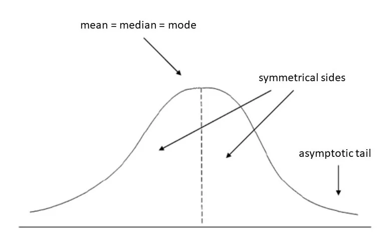
Skev numeriska data
- Centralitetsmått:
Median - Spridning: minimum-maximum (range) eller interkvartilavstånd (
IQR) (kvartil 3 – kvartil 1)
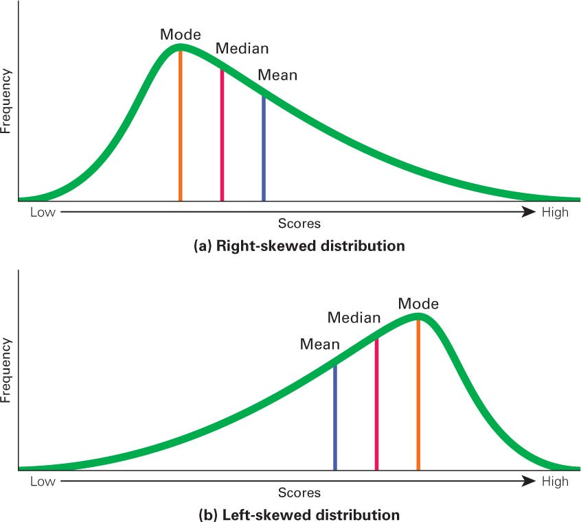
6 Datastruktur
Innan analys: Organisera data
I Excel, SPSS eller ett annat program
- En variabel per kolumn
- En individ (t.ex. patient) per rad
- Ett variabelvärde per cell
- Variabelnamn i första raden
- Helst bara A-Z/a-z, siffror respektive “_”
- Inga tomma rader
- Tom cell betyder saknad data (0 och saknad data är två olika saker)
- Inga kommentarer i datafilen
❌ Fel
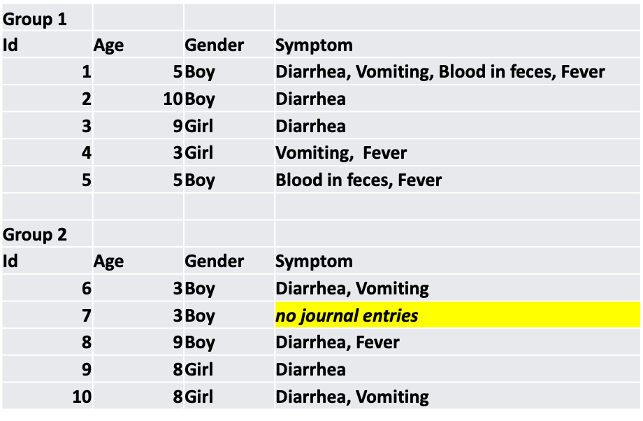
✅ Rätt!
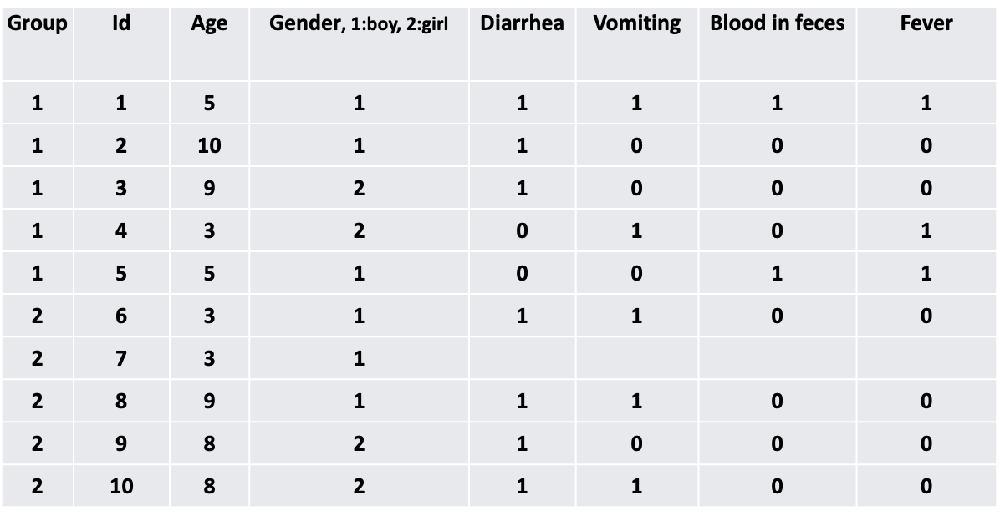
Tidy data är et relevant kocept!Komplexa datakällor
- Om du får många dataset från t ex kvalitetsregister och andra källor kan du behöva kombinera dessa
- Undvik detta om du inte är taggad på en utmaning/har gott stöd av handledaren/har viss kännedom om datastrukturer
- Går till viss del i SPSS men kan motivera att välja t ex R istället?
7 Inferens
Statistisk slutledning
Statistisk inferens
- Statistisk inferens är att dra
slutsatserom urvalets populationsbaserade egenskaper. - Det finns två typer av statistiska slutsatser:
- Skattning/estimering (
konfidensintervall; CI) Hypotesprövning(med hjälp av etttest/CI)
- Skattning/estimering (
Osäkerhet
Det går även att skatta hur bra ett estimat är
Dvs, hur mycket avviker
estimatetfrånparametern?Detta kallas
standardfel(standard error; SE)Standardfel för medelvärdet: \(SE(\bar x) = \frac{s}{\sqrt{n}}\)
Med mer data (större \(n\)) får vi ett mindre fel, dvs en säkrare
skattningVi bryr oss inte om relationen mellan \(n\) och den totala populationsstorleken (ibland \(N\))
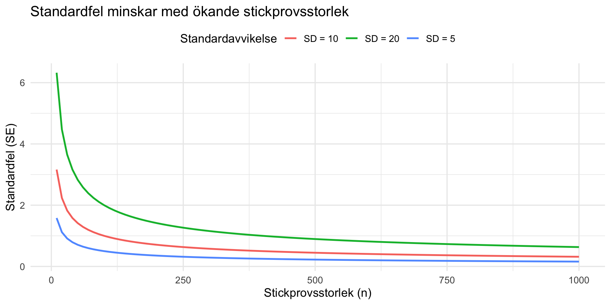
Konfidensintervall (CI)
- Ett intervall som med en viss
säkerhet(\(\neq\) sannolikhet) täcker det sanna parametervärdet. - Ges för \(\mu\) av \(\bar x \pm k \cdot SE\) eller \((\bar x - k \cdot SE; \bar x + k \cdot SE)\)
- där \(k\) är en konstant som beror på den önskade felmarginalen
felmarginal(margin of error): halva bredden av CI- t ex: För
95 % CIär ofta1 \(k = 1.96 \Rightarrow \bar x \pm 1,96 \cdot SE\) - T ex: Vi har \(\bar x = 174\) cm och vi är 95 % säkra på att \(\mu\) ligger mellan 166 och 182 cm.
- Vi kan med 95 % säkerhet säga att den verkliga medellängden för läkarstudenter är mellan 166 och 182 cm.
- Varför just 95 %?
Andra intervall
- Referensintervall (utgår från stickprovet)
- Prediktionsintervall (utgår från en modell)
Hypotesprövning
- Tanken är att vi har en fråga om populationen som vi vill försöka besvara med ett statistiskt
test. - Ett krav för alla statistiska tester är att formulera en
nollhypotes(\(H_0\)) och enalternativhypotes(\(H_1\) eller \(H_A\)).
Hypoteser
- \(H_0\) är ofta försiktigt formulerad: kan aldrig bevisas; anses vara sann till dess motsatsen verkar mycket mer trolig
- \(H_1\) inkluderar allt utom \(H_0\)
- Du bestämmer en
signifikansnivå, ofta 5 % (\(\alpha = 0.05\)) - Testa hypotesen med hjälp av ett statistiskt test, vilket resulterar i ett \(p\)-värde.
- \(p\)-värdet = sannolikheten för ett utfall minst lika “extremt” som det observerade stickprovet, givet att \(H_0\) är sann
- \(p < \alpha\) talar då för at \(H_0\) inte är sann.
- \(\Rightarrow H_0\) förkastas (rejects).
- \(p > \alpha\) betyder att vi saknar tillräckligt underlag för att förkasta \(H_0\) (mer om det senare).
Exempel: Hypoteser
En grupp: Medelåldern här inne är 30 år?- \(H_0: \mu = 30; H_1: \mu \neq 30\)
Två grupper: Män och kvinnor är lika gamla?- \(H_0: \mu_1 = \mu_2; H_1: \mu_1 \neq \mu_2\)
Parade mätningar: Skostorleken på höger och vänster fot är samma?- \(H_0: \Delta = 0; H_1: \Delta \neq 0\)
Flera grupper: Lika långa oberoende av bänkrad?- \(H_0: \mu_1 = \mu_2 = \ldots = \mu_k; H_1: \mu_i \neq \mu_j\) för något \(i \neq j\).
- Hur vet man vilka grupper som i så fall skiljer sig? Post-hoc test!
Note
- Tester kan även avse andra parametrar än medelvärde!
- Ibland används tester intermediärt för att utvärdera om en viss metod är lämplig (preliminary testing/assumption testing).
Parade mätningar
Vanligtvis tre situationer som ger upphov till parade (icke oberoende) observationer:
- Mätningar som görs på
samma individvid olika tidpunkter, t.ex. före och efter behandling - Matchade
fall-kontrollstudier, för varje behandlad patient hittar vi en icke-behandlad person med liknande observerbara egenskaper, för att bedöma behandlingseffekten - I dessa fall finns
beroendemellan observationerna i de olika grupperna.
Par om 2? Går ofta att utgå från differenser: \(\delta_i = x_{i2} - x_{i1}\)
Test
Typav data (kvantitativ/kvalitativ) +fördelningavgörParametriska: utfallsvariabeln är t.ex normalfördelad; medelvärde (\(\mu\)) och standardavvikelse (\(\sigma\)) är parametrar.- Du testar antaganden om parametrarna på populationsnivå (t.ex. \(H_0: \mu = 0\); \(H_1: \mu \neq 0\)).
Icke-parametriska: du vet inte (kan inte anta) någon fördelning för variabeln:- Du testar antaganden om populationen oberoende av någon fördelning (t.ex. medianen eller hela fördelningen)
Antaganden
- Alla statistiska test har
antaganden(assumptions/conditions). T ex: - Typ av variabel (binära/kategoriska/kontinuerliga)
Beroendenmellan observationer.- Parade (beroende) data
- Oberoende data
- T ex: Mann-Whitney U test kräver oberoende grupper
- Några antaganden kan undersökas grafiskt eller mha test
- Några blir mer spekulativa (är enheterna verkligen oberoende?)
- Rent tekniskt/matematisk kan många test utföras ändå men tolkningen riskerar bli fel!
Fel
| Vårt beslut | \(H_0\) sann | \(H_1\) sann |
|---|---|---|
| Förkasta inte \(H_0\) | ✅ (\(1-\alpha\)) | ❌ Typ II-fel (\(\beta\)) |
| Förkasta \(H_0\) | ❌ Typ I-fel (\(\alpha\)) | ✅ (styrka; \(1-\beta\)) |
- ❌ Typ 1-fel: Sannolikheten (\(\alpha\)) att förkasta \(H_0\) när \(H_0\) är sann. “Falskt positivt”
- ❌ Typ 2-fel: Sannolikheten (\(\beta\)) att inte förkasta \(H_0\) när \(H_0\) är falsk. “Falskt negativt”
- ✅ Styrkan (power) av ett test (\(1-\beta\)) är sannolikheten att förkasta \(H_0\) när \(H_0\) är falskt.
Fördelning
- Eng:
distribution - Populationens fördelning
- Stickprovsfördelning
- Den enda observerbara.
- Ju större urval desto närmare populationsfördelningen
- Stickprovsstatistikans fördelning
- Exempel: medelvärdet har en
normalfördelningför en normalfördelad variabel eller ett tillräckligt stort urval
- Exempel: medelvärdet har en
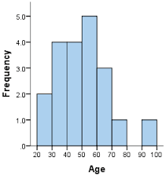
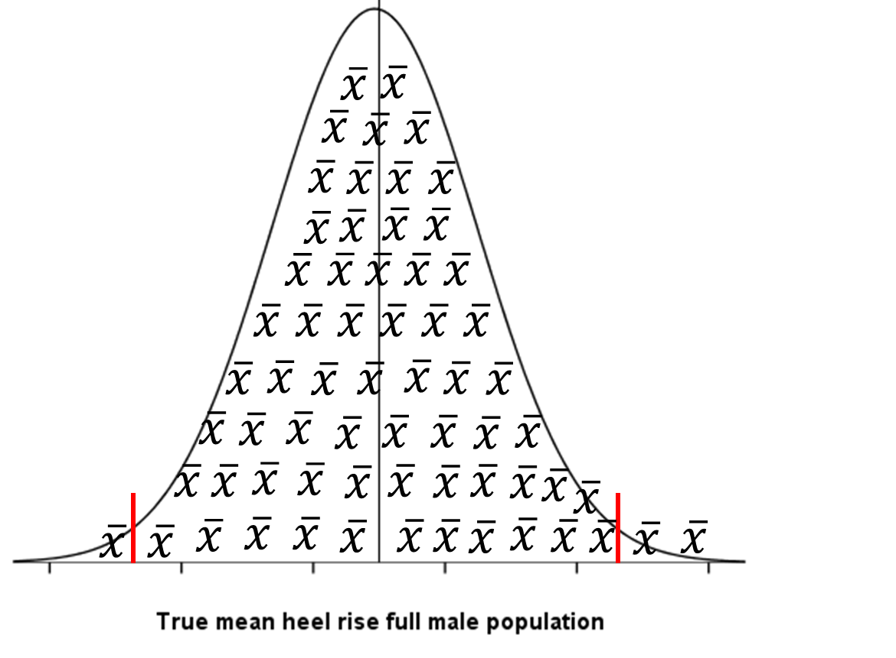
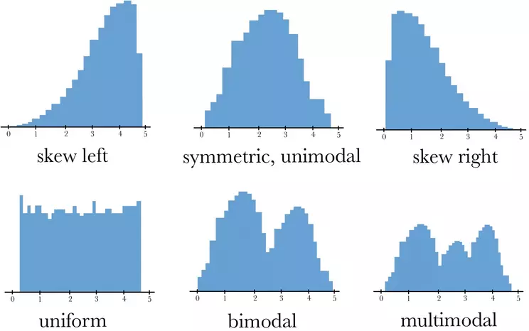
Normalfördelningen
- En väldigt vanlig fördelning för kvantitativa data
Symmetrisk(medelvärde = median = typvärde)Parametriserasmed medelvärde \(\mu\) och varians \(\sigma^2\)- Betecknas ofta: \(N(\mu, \sigma^2)\) eller \(N(\mu, \sigma)\)
- T ex: \(IQ \sim N(\mu = 100, \sigma = 15)\)
- Används ofta i standardiserad form \(N(0,1)\)
- Från denna fördelning är
- 2,5 % av värderna \(\leq -1.96\)
- 2,5 % av värderna \(\geq 1.96\)
1.96är därför en vanlig konstant (\(1.96 = z_{\alpha/2} = k\)) för konfidensintervall och test
Fler fördelningar
- Binomialfördelning (binär data)
- \(t\)-fördelning (“normalfördelning med tjocka svansar”)
- \(\chi^2\)-fördelning (korstabeller)
- Poisson-fördelning (antalsdata)
- \(F\), Weibull, Gompertz, Beta, Gamma, …
Centrala gränsvärdessatsen
Medelvärdetav etttillräckligt stortstickprov av kvantitativa data kommer att varanormalfördelat, oberoende av urvalets fördelning.- (Helt) sant om \(N \rightarrow \infty\)
- Stämmer ganska bra även för relativt små stickprov, om fördelningen är någorlunda symmetrisk.
- Dra nytta av detta när du testar och konstruerar konfidensintervall!
Exempel
Jämför den maximala syreupptagningsförmågan (VO2 max) för personer med löpning (\(n = 25\)) eller promenader (\(n = 21\)) som primär träningsform
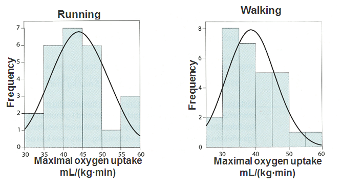
Exempel
Testa om medelvärden skiljer sig
Normalfördelad data/tillräckligt stort stickprov?
Låt \(\mu_1 =\) genomsnittlig maximal syreupptagningsförmåga bland löpare
och \(\mu_2 =\) genomsnittlig maximal syreupptagningsförmåga bland gångare
\(H_0: \mu_1 = \mu_2\)
\(H_1: \mu_1 \neq \mu_2\)
Låt signifikansnivån vara 5 %: \(\alpha = 0.05\)
Parametriskt test med två oberoende grupper.
Oberoende variabel (\(X\)) = motionsform (gå/springa), beroende variabel (\(Y\)) = syreupptagningsförmåga
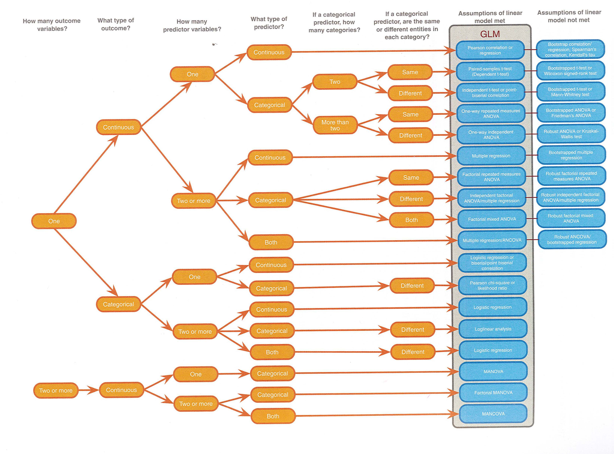
8 p-värden
Nollhypotes och P-värde
- P-värden visar hur väl data stöder en nollhypotes.
- Inte tvärtom!
- Ingen nollhypotes => inget p-värde!
- Det kan ses som svaret på frågan:
- Hur väl stöder mina data nollhypotesen?
- Bara relevant om data representativ för populationen
- Om vi inte känner till nollhypotesen (frågan) blir p-värdet (svaret) meningslöst.
Tolkning av p-värden
- Sannolikheten att dra ett minst lika extremt urval som det vi har, givet \(H_0\).
- Med andra ord, sannolikheten för att observera minst den observerade skillnaden från \(H_0\), givet att \(H_0\) är sann.
- P-värdet säger ingenting om sannolikheten för att \(H_0\) är sann!
- Det mäter inte heller stödet för den alternativa hypotesen \(H_1\)!
Viktigt!
- Alla statistiska test kräver antaganden!
- Egenskaper/påståenden som antas vara sanna och som DU behöver kontrollera!
- Ett p-värde (eller CI) är giltigt (korrekt) om och endast om antagandena är sanna!
- Om antagandena inte håller finns det en risk att p-värdet är nonsens!
\(p \geq\alpha\)
- Att ett p-värde är större än signifikansnivån innebär att resultaten inte är “statistiskt signifikant”.
- Så ett icke-signifikant test av medelvärden innebär att det inte finns någon skillnad mellan grupperna?
- Nej, det är inte vad vi säger!
- Det betyder bara att vi inte kan se en statistiskt signifikant skillnad.
- Det kan vara så att vi har för låg styrka (\(1-\beta\)) för att upptäcka det.
9 Multipla test
Multipla tester
- Ett hypotestest med en signifikansnivå på 5 % har en risk på 5 % för ett falskt positivt resultat (typ I-fel).
- För två parallella test: \(1−(1−0.05)^2=0.0975\)
- Om \(c\) oberoende tester utförs ges en kombinerad risk för minst ett falskt positivt test (“family-wise error rate”; FWER)
- \(\bar \alpha = 1 - (1-\alpha)^c\)
- Bonferroni-korrektion: Skala om signifikansnivån:
- \(\alpha_{new} = \alpha_{old} / c\)
- eller skala om \(p\)-värdet: \(p_{new} = \min(p_{old} \cdot c, 1)\)
- konservativt
- Bonferroni-Holm bättre
- Šidák: \(\alpha_{new} = 1 - (1-\alpha_{old})^{1/c}\)
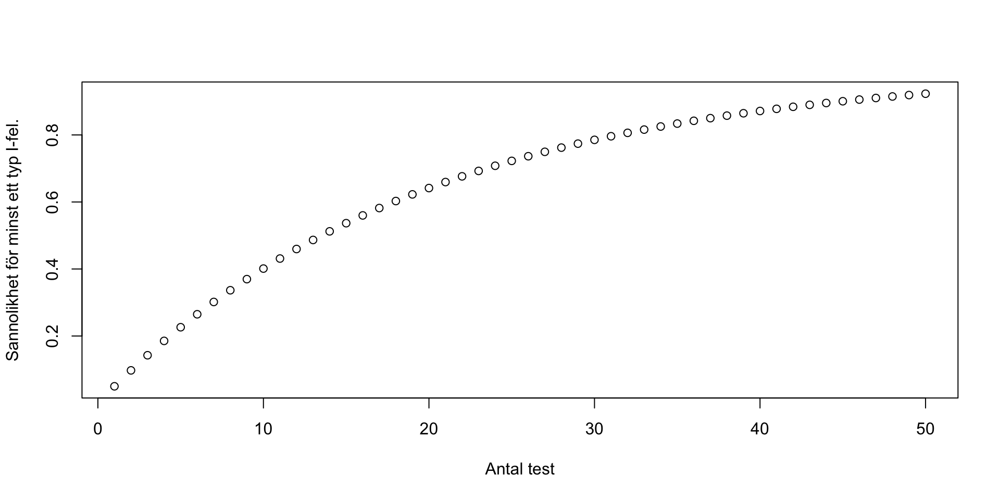
10 Vanliga test
Jämförelse av medelvärden
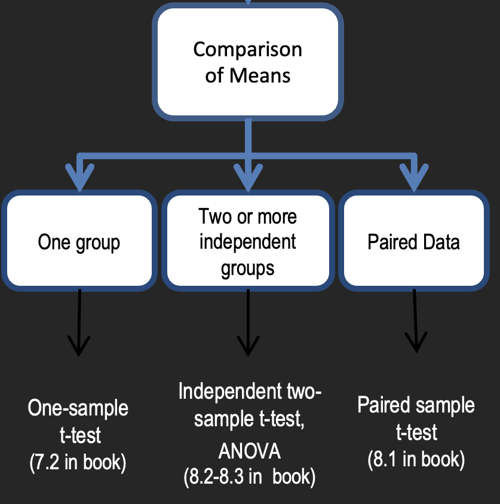
Exempel
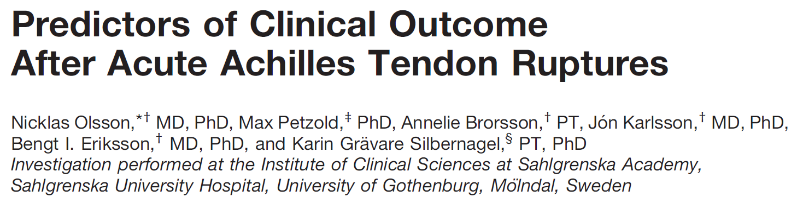
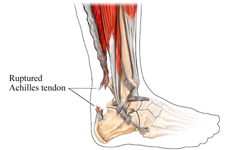
- Syfte
-
Undersöka symtomatiska och funktionella utfall efter akut hälseneskada.
- Data
-
79 män + 14 kvinnor vid 3, 6 och 12 månader.
- Utfall
-
Total Rupture Score (ATRS) för symtom + maximal hälhöjning (LSI) för funktion.
- Prediktorer
-
Behandling, ålder, BMI, fysisk aktivitet, hälhöjning vid 6 mån, ATRS vid 3 mån.
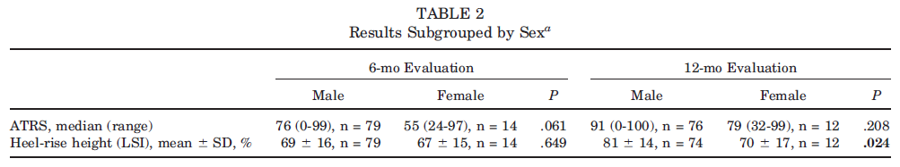
- Vad betyder \(p=0.649\)?
- \(H_0\): Ingen skillnad i genomsnittlig maximal hälhöjning (LSI) mellan män och kvinnor efter 6 månader vs.
- \(H_1\) : Skillnad i genomsnittlig maximal hälhöjning (LSI) mellan män och kvinnor efter 6 månader
- Vilket test bygger det på?
t-test
\(t\)-tester är en familj av tester för medelvärden
- En grupp (one sample t-test)
- Två oberoende grupper (two samples independent t-test)
- Parade mätningar (paired t-test)
- = en grupp av differenser
Vanliga antaganden:
- Kvantitativ variabel
- Fördelningen av populationsmedelvärdet är approximativt normal:
- den är normalfördelad redan i stickprovet
- eller vi vet från andra sammanhang att den är normalfördelad
- eller så är urvalsstorleken “tillräckligt stor”(?). Centrala gränsvärdessatsen!
Vad är “tillräckligt stor”?
Tumregel från Björk:
- \(n < 20\)
-
\(t\)-test bör endast användas om variabeln är känd för att vara normalfördelad (t.ex. från tidigare större studier)
- \(n \in (21, 50)\)
-
\(t\)-test kan användas om data är ungefär normalfördelade
- \(n > 50\)
-
\(t\)-test kan användas (med få extrema undantag)
ANOVA
- Vad händer om vi har mätningar från \(k > 2\) grupper?
- ANalysis Of VAriance (ANOVA)
- Oberoende stickprov \(\Rightarrow\) oberoende ANOVA
- Parade data \(\Rightarrow\) parad ANOVA
- \(H_0: \mu_1 = \mu_2 = \ldots = \mu_k; H_1: \mu_i \neq \mu_j\) för något \(i \neq j\)
- Antaganden:
- Värderna i en given grupp är oberoende och normalfördelade
- Grupperna är oberoende av varandra
- Lika variation i alla grupper (\(\sigma_1^2 = \sigma_2^2 = \ldots = \sigma_k^2\))
- Normalfördelade resiudualer (= skillnad mellan enskilt värde och gruppens medelvärde)
\(F = 15,43 \Rightarrow p < 0.0001\)
Icke-parametriska test
Vad händer om:
- jag har en skev fördelning?
- antagandena för parametriska tester inte är uppfyllda?
- variabeln inte är kontinuerlig, utan ett ordningstal?
- ICKE-PARAMETRISKA TEST!
Några icke-parametriska test
- 2 oberoende grupper
-
Mann-Whitney U-test
(=Mann–Whitney–Wilcoxon (MWW/MWU), Wilcoxon rank-sum test, or Wilcoxon–Mann–Whitney test)
T ex: Fysiskt aktiva vs Fysiskt icke-aktiva personer
Du behöver inte ha samma antal observationer i båda grupperna!
- Parade observationer
-
tecken-test (Sign-test)
-
Wilcoxon signed-rank test
-
Kräver observationer från varje medlem i paret (före—efter)
- Fler oberoende grupper
-
Kruskal-Wallis test
-
(parameterfritt alternativ till ANOVA)
- Fler grupper med parade mätningar
-
Friedmans test
Exempel: njurfunktion
- Två metoder för att skatta njurfunktion (GFR):
- kreatinin
- cystatin C.
- \(n = 16\) barn med båda mätningarna
- Högre värden (för både kreatinin och cystatin C) associeras med sämre njurfunktion
- Men finns det belägg för att de två metoderna skiljer sig?
- \(H_0:\) ingen skillnad; \(H_1\): grupperna skiljer sig
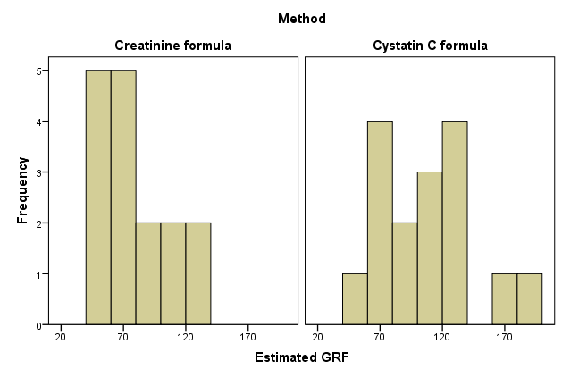
| Creatinine | Cystatin C | |
|---|---|---|
| Medelvärde | 78 | 106 |
| Median | 70 | 105 |
| Standardavvikelse | 27 | 36 |
| Min - Max | 44 - 126 | 52 - 180 |
- Fördelningen ser INTE symmetrisk ut (varken för kreatinin- eller cystatin C-baserade uppskattningar; hur fördelas differenserna?)
- Liten urvalsstorlek
- => Vi kan inte använda det parametriska ”parat t-test”
- => Behöver ett icke-parametriskt test!
SPSS
Parade data => Wilcoxon Signed Rank test
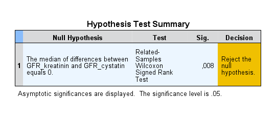
Exempel: Nordisk hälsa
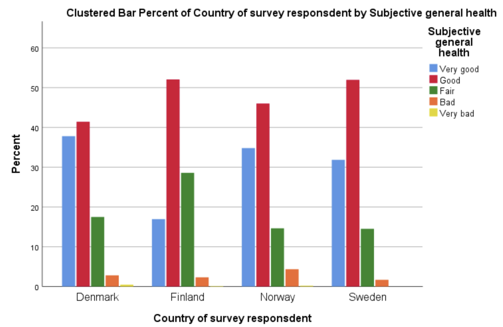
Finns skillnad?
Finns det någon skillnad i allmän hälsa mellan nordiska länder?
- Utfallsvariabel?
generell hälsa
- Typ/skala på utfallsvariabel?
- Egentligen ordinal (kategorisk)
- Flödesschemat utgår dock från att man betraktar den som “continous”
- Om kvantitativ: antagande om normalfördelning?
NA
- Om kvantitativ: antagande om normalfördelning?
- Antal prediktorer (grupperingsvariabel)?
1(Nordiskt land)
- Typ/skala på oberoende variabel?
kategorisk(nominal)
- Hur många kategorier om det är en kategorisk prediktor:
> 2(4: Danmark, Finland, Norge, Sverige)
- Parade eller oberoende data?
oberoende
Kruskal-Wallis
Testar om stickprov (> 2) kommer från samma fördelning.
Antaganden:
Oberoendeobservationer: Observationerna inom varje grupp eller kategori är oberoende av varandra.Homogenitetav varians: Variansen för utfallsvariabeln är lika i alla grupper.Ordinalskala: Utfallsvariabeln är mätt på en ordinalskala, vilket innebär att observationerna kan rangordnas.
Exempel: höftprotes
Återhämtning av fysisk funktion efter total höftprotesoperation: Finns det någon skillnad i fysisk funktion
föreoperation samt 3 eller 6 månaderefter?Poäng för fysisk funktion (mätt med SF-36) är numeriska men inte normalfördelade och med en liten urvalsstorlek.
- Utfallsvariabel?
SF-36
- Typ/skala på utfallsvariabel?
kvantitativ- Om kvantitativ: antagande om normalfördelning?
Nej
- Om kvantitativ: antagande om normalfördelning?
- Antal prediktorer (grupperingsvariabel)?
1(tidpunkt)
- Typ/skala på oberoende variabel?
kategorisk(ordinal)
- Hur många kategorier om det är en kategorisk prediktor:
> 2(3: baseline, 3 månader, 6 månader)
- Parade eller oberoende data?
parade
Friedmans test
Baseras på rangordningen av observerade värden.
Antaganden:
- Parade/upprepade mätningar (>2 tillfällen)
- Ordinalskala, intervallskala
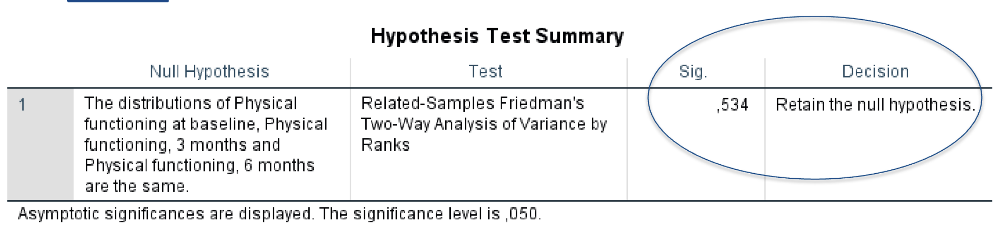
Parametriskt eller icke-parametrisk?
- Vilken information används?
- Parametrisk: Kunskap om fördelning och observerade värden
- Icke-parametrisk: Rangordningen för de observerade värdena
- Vad är risken med parametriska tester?
- Om antagandena inte uppfylls => felaktiga slutsatser 👎
- Varför använder vi inte alltid icke-parametriska tester?
- Om antagandena för parametriska test är uppfyllda så har dessa bättre
styrka(power) att upptäcka skillnader
- Om antagandena för parametriska test är uppfyllda så har dessa bättre
11 Korrelation
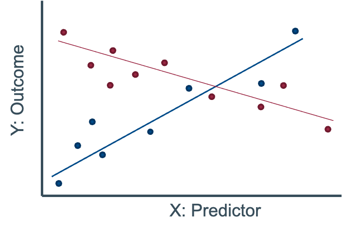
linjärt samband
- Pearsons
korrelationskoefficient - Betecknas oftar \(r\) eller \(\rho\)
- Mäter det
linjära sambandetmellan två kvantitativa variabler - Har ett värde mellan -1 och 1
- 1 = perfekt ökande linjärt samband
- 0 = inget linjärt samband
- -1 = perfekt minskande linjärt samband
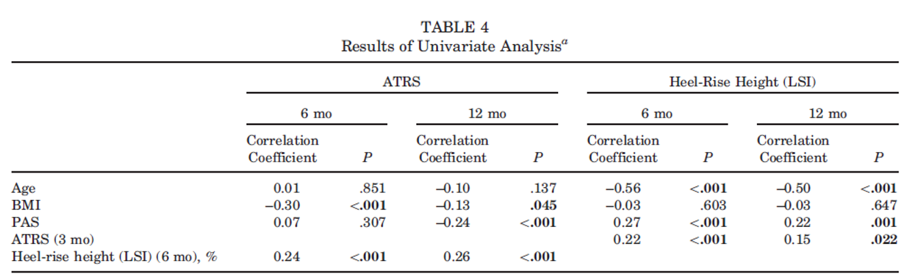
\(\rho = -0.56\)
Icke-linjärt samband
Vad händer om relationerna inte är linjära?
Korrelation mellan rangordning
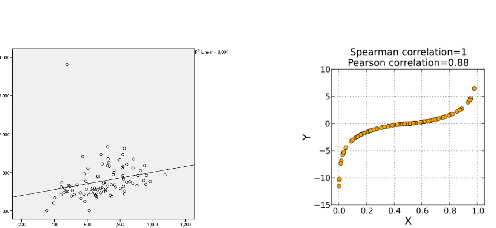
12 Regression
Linjär regression
- Anta en matematisk
modellsom återspeglar verkligheten. - Baserat på detta vill vi
förutsäga(predicera) en utfallsvariabel \(Y\)- från en (eller flera)
oberoende variabler\(X\) (som är kända).
- från en (eller flera)
- Flera typer av frågor kan besvaras med hjälp av regression:
- Har förekomst (diagnostisering?) av autism (ESSENCE-problematik) ökat under de senaste 2 decennierna?
- Botar ett nytt läkemedel allergi, eller leder det tvärtom till fler biverkningar?
- Hur stor är risken för bilolyckor under en viss period?
“All models are wrong, but some are useful” — George Box
Den bäst anpassade räta linjen
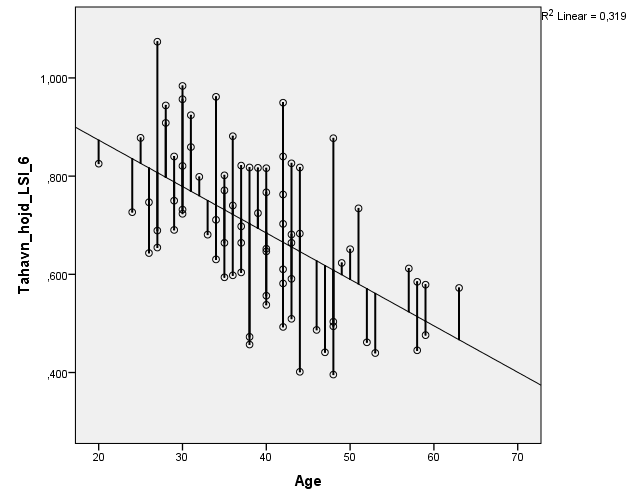
Räta linjens ekvation?
- \(y = kx + m\) från grundskolan
- Vi har dock inte en deterministisk relation
- Slumpen \(\varepsilon\) vill också vara med!
- \(y = kx + m + \varepsilon\)
- Av tradition särskiljer man ofta variabler (\(x, y\)) med latinska tecken från parametrar/koeficienter med grekiska tecken (\(k \rightarrow \alpha, m \rightarrow \beta\))
- Alternativt: \(E[Y] = \alpha + \beta x\) där \(E[X] =\) väntevärdet (tänk “medelvärdet” av \(Y\))
- \(\varepsilon =\) kvarvarande “slump” som inte förklaras av modellen
Different things but same names and same names but different things
- I SPSS ges både \(\alpha\) och \(\beta\) i kolumn “B”
- I regression betecknar \(\alpha\) och \(\beta\) något helt annat än tidigare (sannolikheten för typ I- och II-fel)!
- Ibland kallar man \(\alpha\) för \(\beta_0\) och \(\beta\) för \(\beta_1\)
Korrelation vs. regression
- De är besläktade men inte samma sak.
- Korrelation har ingen riktning från en variabel till en annan. Variablerna är korrelerade med varandra.
- Linjär regression antar en “riktning”: Resultatet (\(Y\)) sägs vara beroende av prediktorn (\(X\)).
- Dock behöver inte riktningen vara “kausal” (orsaksbestämd) även om det ofta är vad man önskar!
- Linjär regression är en matematisk modell:
- \(E[Y] = \alpha + \beta X\)
SPSS
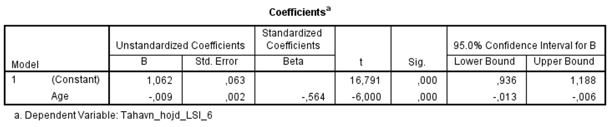
\(E[Y] = \alpha + \beta X \Rightarrow Heel-rise \approx 1.062 – 0.009 \cdot Age\)
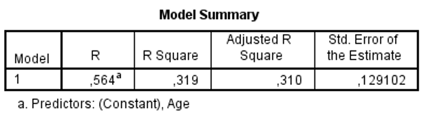
- Hur bra är modellen?
- Signifikans?
- Konfidensintervall?
Antaganden
Den linjära regressionen ger endast giltiga resultat om vissa antaganden uppfylls:
- Utfallsvariabeln är en skalvariabel
- Linjärt samband mellan X och Y (eller en funktion av X; logtransformera?)
- Residualerna (\(\varepsilon = y - (\alpha + x\beta)\)) är
- oberoende (på samma sätt som att säga att för varje värde på \(X\) är \(Y\):na oberoende
- normalfördelade med medelvärde 0 och konstant avvikelse, för alla värden på \(X\), dvs \(\varepsilon \sim N(0, \sigma^2)\) för ngt \(\sigma^2\)
Multipel regressionen
“Justera (kontrollera) för andra variabler”
- Enkel/simpel/univariabel regression
-
som ovan (endast en \(X\)-variabel)
- Multipel/multivariabel regression
-
flera prediktorer/riskfaktorer samtidigt (\(E[Y] = \alpha + \beta_1X_1 + \beta_2X_2 + \ldots + \beta_kX_k\))
Multivariat regression
Multivarat regression har flera utfallsvariabler (\(Y\)). Ej att förväxla med multipel/multivariabel regression!
Modellbygge
Modellbygge är komplicerat!
- Välja potentiellt förklarande variabler med hjälp av medicinsk kunskap.
- Kan underlätta med Directed Acyclic Graphs (DAG) (online-verktyg: dagitty.net)
- Plotta och “lär känna” data
- Undvik starkt korrelerade prediktorer (kolienaritet) om syftet är en tolkningsbar modell
- Börja med enkla modeller (eng: parsimonious; Ockhams rakkniv)
- Lite olika tillvägagångssätt för förklarande resp predicerande modeller (även om matematiken är densamma)
Simpsons paradox
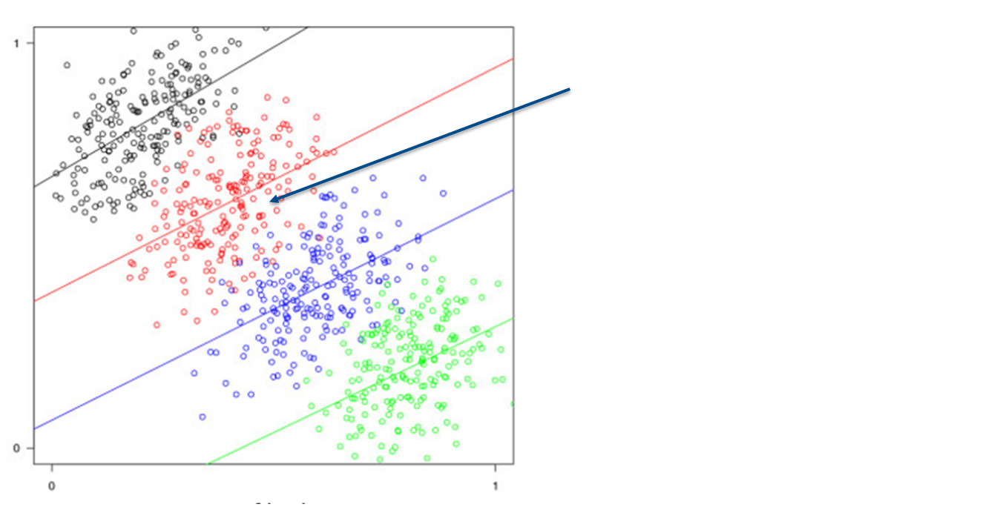
Exempel LSI
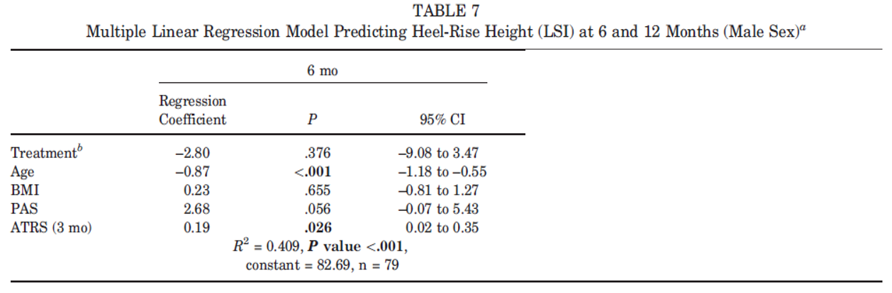
- \(E[LSI] = 82.69 − 2.80 \cdot Treatmen_{𝑛𝑜𝑛𝑠𝑢𝑟𝑔𝑖𝑐𝑎𝑙} − 0.87 \cdot Age + 0.23 \cdot 𝐵𝑀𝐼 + 2.68 \cdot PAS + 0.19 \cdot ATRS_{3m}\)
- \(R^2 = 0.409 \Rightarrow\) Modellen förklarar cirka 41 % av variationen i LSI
13 Kvalitativt utfall
Kvalitativa (kategoriska) utfallsvariabler
- Utfallsvariabler som är:
Nominalskala(kön, ögonfärg, …) utan inbördes ordningOrdinalskala(Bra-Bättre-Bäst, Ålderskategorier) har en naturlig ordning
- “Avståndet mellan stegen är inte definierat”
- De kan bara ta ett fåtal möjliga värden
Exempel: biverkningar
Vi vill undersöka om förekomsten av biverkningar skiljer sig mellan två behandlingsgrupper: en som får ett nytt läkemedel och en som får placebo.
- \(H_0\): Ingen skillnad i andelen biverkningar mellan grupperna.
- \(H_1\): Finns skillnad i andelen biverkningar mellan grupperna.
Samband mellan kategoriska variabler
Pearsons\(\chi^𝟐\)-test- Vanligt test för valfritt antal rader och kolumner
- kräver att förväntat värde i minst 80 % av cellerna är > 5
- Pearsons \(\chi^2\)-test jämför
förväntatantal medobserveratantal - Om det finns en STOR diskrepans så får vi ett litet p-värde
- Då förkastar vi \(H_0\) och drar slutsatsen att det finns ett samband
- Annars misslyckas vi med att förkasta \(H_0\)
Important
Fishers exakta test räknas mer exakt och kan också användas för små tal (< 5 obs. i varje cell). Använd det om du/datorn orkar!
Exempel
Detta är vad vi observerar:
| Grupp | Biverkning | Ingen biverkning |
|---|---|---|
| Läkemedel | 30 | 70 |
| Placebo | 40 | 160 |
🤔 Men vad skulle vi istället förvänta oss givet \(H_0\)?
🤓 Börja med att beräkna marginalsummor:
| Grupp | Biverkning | Ingen biverkning | Totalt |
|---|---|---|---|
| Läkemedel | 30 | 70 | \(R_1 = 100\) |
| Placebo | 40 | 160 | \(R_2 = 200\) |
| Totalt | \(C_1 = 70\) | \(C_2 = 230\) | \(N = 300\) |
Sedan ges det förväntade av: \(E_{ij} = \frac{R_i \cdot C_j}{N}\)
| Grupp | Biverkning | Ingen biverkning | Totalt |
|---|---|---|---|
| Läkemedel | \(E_{11} = \frac{100 \cdot 70}{300} = 23.33\) | \(E_{12} = \frac{100 \cdot 230}{300} = 76.67\) | 100 |
| Placebo | \(E_{21} = \frac{200 \cdot 70}{300} = 46.67\) | \(E_{22} = \frac{200 \cdot 230}{300} = 153.33\) | 200 |
| Totalt | 70 | 230 | 300 |
Note
Dvs, vi förväntar oss minst 5 fall i samtliga celler och kan då använda \(\chi^2\)-testet!
Hur mycket skiljer sig det förväntade från det observerade?
\[\chi^2_{ij} = \frac{(O_{ij} - E_{ij})^2}{E_{ij}}\]
| Grupp | Biverkning | Ingen biverkning |
|---|---|---|
| Läkemedel | \(\chi^2_{11} = \frac{(30 - 23.33)^2}{23.33} = 1.90\) | \(\chi^2_{12} = \frac{(70 - 76.67)^2}{76.67} = 0.58\) |
| Placebo | \(\chi^2_{21} = \frac{(40 - 46.67)^2}{46.67} = 0.95\) | \(\chi^2_{22} = \frac{(160 - 153.33)^2}{153.33} = 0.29\) |
Totalt: \(\chi^2 = 1.90 + 0.58 + 0.95 + 0.29 = 3.72\)
- Frihetsgrader (\(df\)): \(df = (r - 1)(c - 1) = (2 - 1)(2 - 1) = 1\)
- Kritiskt värde vid \(\alpha = 0.05\) och \(df = 1\) är \(3.84\)
- Eftersom \(3.72 < 3.84\), kan vi inte förkasta \(H_0\).
- Det finns ingen signifikant skillnad i andelen biverkningar mellan patienter som fick läkemedlet och de som fick placebo (\(\chi^2 = 3.72\), \(p > 0.05\)).
Binärt utfall
- Två möjliga utfall:
0: falskt, nej, inget, …1: sant, ja, något, …
- Dvs \(x = 0\) eller \(x = 1\)
- sannolikhet
-
för \(x = 1\) betecknas \(p\) och skattas som \(\bar x\)
-
\(P(X = 1) = p \approx \bar x = \hat{p}\)
- odds
-
\(P(x = 1) / P(x = 0) = p/(1-p)\)
Från två grupper
- Anta att vi har värden:
- \(X_S = (1, 1, 0, 1, 0)\) från Stockholmare och
- \(X_G = (0, 1, 0, 0, 0)\) från Göteborgare.
- \(\bar x_S = \bar p_S = 3/5 = 0.6\) och \(\bar x_G = \hat p = 1/5 = 0.2\)
- Odds för Stockholm: \(0.6/(1-0.6) = 1.5\)
- \(1.5 > 1\), dvs det är mer sannolikt för Stockholmare att ha \(x = 1\) jmfrt med att inte ha det.
- Odds för Göteborgare: \(0.2/(1-0.2) = 0.25\)
- \(0.25 < 1\), mindre så för Göteborgare
- Prevalens/“risk”
-
\(=p\) för respektive grupp
- Prevalenskvot/relativ risk (RR)
-
\(p_S/p_G = 0.6/0.2 = 3\)
-
prevalensen är 3 ggr så hög i Stockholm
- Oddskvot (odds ratio; OR)
-
kvoten av Odds
-
\(1.5 / 0.25 = 6\)
-
Hur tolkar vi detta?
RR och OR har samma riktning men magnituden skiljer. Ligger dock ganska nära varandra för låga värden.
Test
- Några vanliga sätt att jämföra binära data från oberoende grupper:
Chi2-test(\(\chi^2\)-test)- Differens mellan oberoende andelar
- Kvot mellan oberoende andelar
- Tvärsnittsstudier (cross-sectional) –
Prevalenskvot - Kohort/uppföljningsstudier –
Relativ risk(RR)
- Tvärsnittsstudier (cross-sectional) –
- Kvoten mellan oberoende odds i fall-kontrollstudier –
Oddskvot(OR)
Logistisk regression
- \(Y \in \{0,1\}\)
- Kan vi använda linjär regression? 🙋♂️
- Nej, för få möjliga utfall 👎
- Betrakta istället sannolikheten: \(P(Y = 1) = p \approx \bar x\)
- Linjär regression nu då? 🤷♂️
- Nej, för snävt intervall \((0,1)\) 🧐
- Men om vi tar oddset då? 🤓
- Ok då, men logaritmera först! 👍
- Och de intressanta resultaten ges av (logaritmerade) oddskvoter!
- Fast då heter det logistisk regression: 👆
- En prediktor ->
Enkel(simple)logistisk regression - Flera prediktorer ->
Multippel logistisk regression
- En prediktor ->
Exempel
Multipel logistisk regression
- Fråga: Påverkar rökning risken för diabetes?
- Utfall, \(Y\): Diabetesdiagnos (1= Ja, 2= Nej)
- Oberoende variabler:
- Rökare: 1= Ja (nuvarande), 2= Nej (icke-rökare REF.)
- Kön (1 = Man, 2 = Kvinna REF.)
- Ålder (år)
- BMI
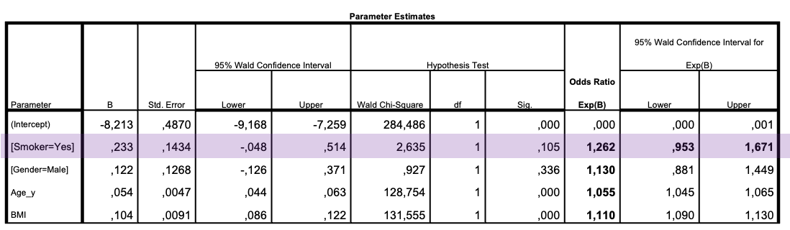
- Oddskvoten för rökare jämfört med icke-rökare för att ha diabetes är 1,26.
- Dvs, rökare i denna studie har 1,26 gånger så höga odds att ha diabetes (= 26 % högre).
- Dock är detta inte en signifikant prediktor
- eftersom 95% CI inkluderar ETT och \(p > 0,05\).
- Förresten… Skriv aldrig \(p=0,000\) i en rapport! Det bör vara \(p<0,001\).
Upprepade mätningar
Observera att longitudinella studier med fler än 2 mätningar per individ kräver andra typer av statistiska metoder.
Tip
Behöver du analysera sådan data rekommenderas t ex ANOVA för upprepade mätningar eller mixade modeller (mixed models; som också går under en rad andra namn). Detta bygger på att din handledare kan vägleda dig kring dessa metoder. Försök annars omformulera frågeställningen!
14 Överlevnadsanalys
Benämning
- Eng: survival analysis
- Eg bättre: “Tid-till-händelse-analys” (time-to-event analysis)
- Stort fält med många olika tekniker
- Kaplan-Meier och Cox-regression vanligast
Tid och händelse
- Startpunkt
- diagnosdatum
- indexdatum (matchade kontroller)
- operationsdatum
- …
- Slutpunkt
- död (därav namnet)
- re-operation/revision
- återfall/recidiv
- Tid
- Antalet dagar (oftast) från start till slut
Varför?
- 🙋♂️ Detta låter enkelt: Om antalet dagar är en skal-variabel så kan vi väl använda linjär regression?
- 👍 Ja, om vi verkligen har komplett data
- 👎 Men ofta har vi inte det!
- 🙋♂️ Eller om utfallet bara är död/levande kan vi väl använda logistisk regression?
- Ja, men begränsas då till död inom en viss tid.
- I praktiken får denna tid vara relativt kort om vi inte vill vänta med analysen tills dess att data blivit helt inaktuell.
Censurering
- Alla som inkluderas har (oftast) en starttid
- Men har alla en sluttid?
- Ska vi vänta tills alla dör?
- Ska vi ignorera dem som inte hinner dö innan vi analyserar data?
- Eller kan vi ändå nyttja det vi vet? Dvs, vi vet åtminstone att individen ännu inte dött efter ett visst antal dagar?
- Vet vi inte längre om individen är död eller levande så är denna information
censureradfrån och med denna tidpunkt - Ett vanligt antagande är att censurering inträffar oberoende av utfallet
Olika sorter
- höger, vänster, intervall
- Vi fokuserar på höger-censurering
- känd startpunkt
- tillåter okänd slutpunkt
- Vi fokuserar på höger-censurering
- “loss-to-follow-up”
- Forskningspersoner avbryter sitt studiedeltagande
- personer emigrerar (försvinner ur svenska register)
- Administrativ censurering
- Vi orkar inte vänta tills alla dör
- Censureringsdatum: sista datumet för vilken information om utfallet var känt (oavsett orsak):
- Senast genomförda uppföljningsbesök
- Datum för emigrering enligt folkbokföringen/Skatteverket/Navet
- Datum då datauttag gjordes från kvalitetsregister
Variabler
- Tid (\(t\)): Antal dagar
- Status (\(s\)): Den händelse som inträffat efter \(t\) dagar
0om individen vid detta datum fortfarande lever1om individen dog vid detta datum
Life tables
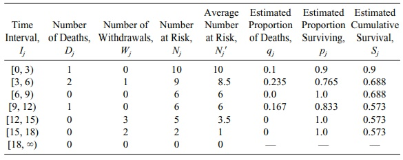
Kaplan-Meier
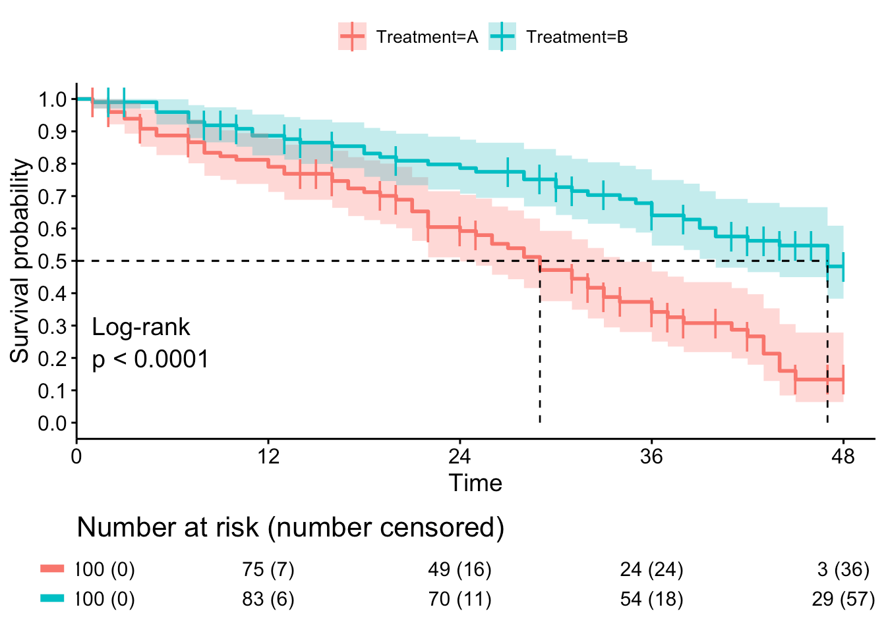
För- och nackdelar
Fördelar
- Ger en tydlig grafisk representation
- Lätt att utläsa andelen ännu levande efter viss tidpunkt
Nackdelar
- Bara EN kurva
- Vill man ha fler får man stratifiera stickprovet
- Kan inte “justera för” fler variabler
- om man inte stratifierar alla kombinationer
- Finns dock även justerade Kaplan-Meier kurvor men är ganska ovanligt (och svåra att tolka).
Cox-regression
Fördelar
- Kan justera för flera variabler
Nackdelar
- Inte lika lätt att tolka (modellerar relativa hazarder)
- Kräver antaganden (propertionerliga hazarder)
- Finns dock varianter för tidsberoende data
- värdet beror på uppföljningstiden (men utan att vara lika explicit som KM)
- Svårt att illustrera grafiskt
Hazard
- Cox-regression är en semi-parametrisk modell
- hazarden \(\lambda\) parametriseras
- “baseline-hazarden” kan förbli okänd
- \(\lambda =\) sannolikheten att händelsen inträffar väldigt snart efter en viss tidpunkt. Tänk frekvens!
- Hazardkvoter: \(\lambda_1/\lambda_2\)
- = 1: ingen skillnad mellan två grupper
- \(\neq 1\): Individer i ena gruppen dör med högre (lägre) frekvens än i den andra
Använda båda?
- Eftersom både KM och Cox-regression har för- och nackdelar kan man använda båda!
- De svarar dock på olika frågor (andelen kumulativt överlevande resp. hazardkvoter)
- I löpande text kan man presentera andelen som ännu inte dött (eller dess motsats) vid en kliniskt relevant tidpunkt (30 dagar, 3 månader, 1, 3, 5 eller 10 år?)
Enkla mått?
- Om minst hälften dör under studietiden så kan man presentera mediantiden för detta
- Medelvärdet kan vi dock inte beräkna om vi inte har komplett uppföljning
- Restricted mean survival time (RMST) är ett alternativ som räknar medeltiden individer lever under en begränsad tid
Viktigt!
- Tänk på urvalsstorlek
innanstudien påbörjas - Försök att ange så mycket som möjligt i
studieprotokolletinnan du börjar samla in och analysera data - När du har data:
plotta/tabuleraalltid data - Utvärdera
antaganden - Inkludera/exkludera endast observationer (t ex outliers) på ett vetenskapligt korrekt sätt (vad nu det ska betyda …)
15 Forskningsfrågan
Vad är en forskningsfråga?
- En forskare bör ställa en mycket specifik fråga.
- Breda frågor bryts vanligtvis ner i mindre frågor.
- En bra kvantitativ forskningsfråga kan leda till en testbar hypotes.
Dålig fråga
- En fråga som inte spelar någon roll för någon (inte ens för dig)
- Den måste vara användbar på ett eller annat sätt…
- (… fast kanske inte det primära syftet just i detta fall … fortsatt relevant som lärtillfälle)
- Och i grundforskning kan det ta lång tid innan den kliniska relevansen uppdagas (inom matematik upp till 300 år!)
- Hoppas på att en fråga ska framträda från rutinmässiga kliniska journaler
- Journalerna kommer att vara partiska och förvirrade
- De kommer att sakna den information du behöver för att tillförlitligt svara på din fråga, eftersom de skrevs av en annan anledning
- Fisketur/trålning - samla in ny data och hoppas på att en fråga ska framträda
Bra fråga
FINER-kriterierna
Feaseble/Genomförbar (Svarbar med en robust metod och inom din begränsade tidsram)IntressantNydanande (Kanske inte den viktigaste i just detta sammanhang)EtisktRelevant
Exempel
Förklarar en skillnad i ___________________ (oberoende variabel) skillnader i ___________________ (beroende variabel), med kontroll för effekterna av ___________________ (kontrollvariabel)?
Förklarar en skillnad i
behandlingskillnader imaximal hällyftningshöjd,med kontroll för effekterna avålder och BMI?
- Observationsstudier
- Vad är sambandet mellan långväga pendling och ätstörningar?
- Experimentella studier
- Leder konsumtion av snabbmat till ätstörningar?
- Vad säger FINER-kriterierna om det (Etiken?)
PICO/SPICE
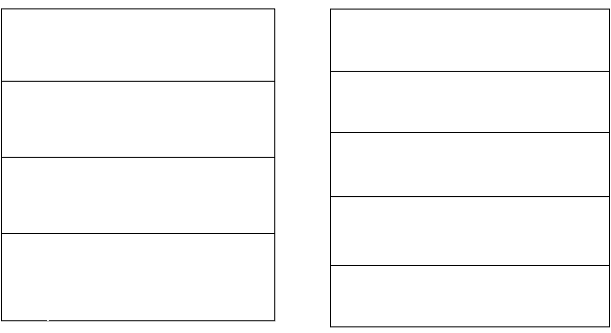
Några online-riktlinjer
- Equator-nätverket
-
Förbättrar kvaliteten och transparensen i hälsorelaterad forskning
-
Riktlinjer för rapportering och länkar till resurser för forskningsrapportering
- Codex
-
Regler och riktlinjer för forskning
-
Information om de riktlinjer, etiska koder och lagar som reglerar och ställer etiska krav på forskningsprocessen.
16 Studie-design
Alternativ
Experimentell studie
- identifiera deltagare (inklusions- ock exklusionskriterier)
- randomisera
- intervenera
- observera effekten
- analysera
graph TD
A[Studiedesign] -->|Manipulera| B[fa:fa-flask Experimentell]
A -->|Observera| C[fa:fa-eye Observationell]
B --> |Följ upp| D[fa:fa-hospital Klinisk prövning]
C --> |Följ INTE upp| E[fa:fa-user-clock Tvärsnittstudie]
C --> |Följ upp| F[fa:fa-calendar-alt Longitudinell]
F --> G[fa:fa-users Kohortstudie]
F --> H[fa:fa-user-friends Fall-kontroll-studie]
subgraph Experimentell
B
D
end
RCT
Bu eller bä
- 👍 Fördelar
- “Guldstandard” för att fastställa orsakssamband/
kausalitet(fortfarande inte enkelt…) - Minskar (eliminerar?) påverkan av förväxlingsfaktorer (confounders) genom randomisering.
- Behöver (kanske?) inte justera för förväxlingsfaktorer
- Förenklar de statistiska analyserna
- Blinding är ibland möjligt (kanske svårt vid kirurgi?)
- “Guldstandard” för att fastställa orsakssamband/
- 👎 Nackdelar
- Dyrt och tidskrävande
- Ibland etiska problem
- Urvalsbias
- Det som fungerar i en artificiell studie kanske inte fungerar i “verkliga livet”.
Crossover trials
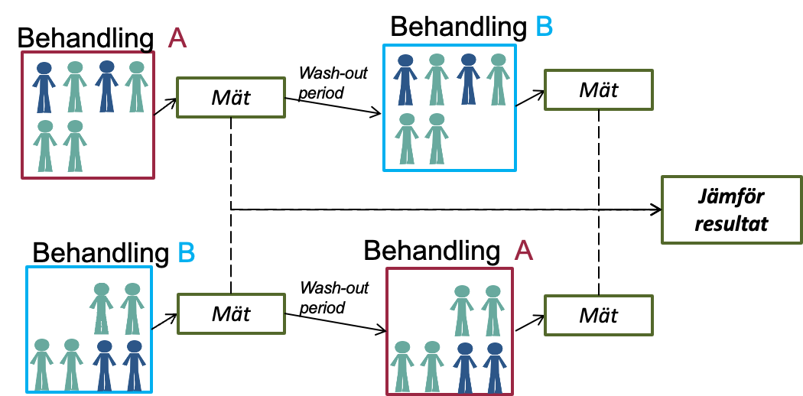
Bu eller bä
- 👍 Fördelar
- Alla deltagare fungerar som sina egna kontroller
- Felvarians minskas → mindre provstorlek behövs
- Alla deltagare får behandling
- Blinding kan användas
- 👎 Nackdelar
- Alla deltagare får placebo/alternativ behandling vid något tillfälle
- “Wash-out”-perioden är lång eller kan vara okänd
- Fungerar inte för behandlingar med permanenta effekter
Observationell
- identifiera deltagare (inklusions- ock exklusionskriterier)
- observera vad som händer
- analysera
graph TD
A[Studiedesign] -->|Manipulera| B[fa:fa-flask Experimentell]
A -->|Observera| C[fa:fa-eye Observationell]
B --> |Följ upp| D[fa:fa-hospital Klinisk prövning]
C --> |Följ INTE upp| E[fa:fa-user-clock Tvärsnittstudie]
C --> |Följ upp| F[fa:fa-calendar-alt Longitudinell]
F --> G[fa:fa-users Kohortstudie]
F --> H[fa:fa-user-friends Fall-kontroll-studie]
subgraph Observationell
C
E
F
G
H
end
Bu eller bä
- 👍 Fördelar
- Etiskt säkert
- Troligtvis mindre resurskrävande
- 👎 Nackdelar
- Exponering kan vara kopplad till en dold förväxlingsfaktor
- därmed mycket svårare att uttala sig om kausalitet
- Blinding är svårt
- För sällsynta sjukdomar krävs stor urvalsram (om befintliga data nyttjas)
Hur välja?
- Finns data redan insamlad? I så fall är valet redan gjort!
- Vad är ditt utfall?
- Vanligt eller ovanligt
- har vi tillräckligt stort stickprov för att skatta prevalensen av en väldigt ovanlig åkomma?
- Incidensen kräver ännu större stickprov
- associationer eventuellt ännu mer
- Tidsram
- Prospektiv eller retrospektiv (historisk kohort)
- Intresserad av förändringar över tid eller en enskild tidpunkt?
- Naturlig gruppering av deltagare?
- Exponerade vs. icke-exponerade
- Sjuka vs. friska
Tvärsnittsstudier
Tvärsnittsdata är en ögonblicksbild av populationen, där exponeringen och utfallet mäts samtidigt.
- Användbart för att beskriva variabler och deras fördelningsmönster.
- Kan användas för prevalensskattning (inkl kvoter)
- Lättast för tillstånd som är relativt vanliga med lång varaktighet (icke-dödliga, kroniska tillstånd)
- Svårare studera sällsynta, mycket dödliga sjukdomar eller sjukdomar med kort varaktighet
- Inte lämpligt för att dra kausala slutsatser
Kohortstudie
“Bäst för att studera effekterna av riskfaktorer på en utfall”
Prospektivakohortstudier börjar med en grupp (kohort) friska deltagare och jämför exponerade mot icke exponerade => är de som är exponerade mer benägna att bli sjuka?- Data kan samlas under studiens gång eller baseras på historiska data (register etc som då fortfarande kan ha haft en prostepktiv datainsamling då det begav sig).
Ingen randomiseringav exponering/behandling.- Effekter kan vara confounded (behandling given på grund av specifik indikation). Vad är då effekten av vad?
Resultatet av kohortstudier:
Incidens/relativ risk för incidens “Rökare har 3 gånger högre sannolikhet att utveckla hjärt-kärlsjukdom jämfört med icke-rökare.”
Överlevnad “Patienter som fick behandling \(A\) hade dubbelt så stor sannolikhet att överleva minst 5 år, jämfört med de patienter som fick behandling \(B\).” (Men berodde skillnaden på behandlingen?)
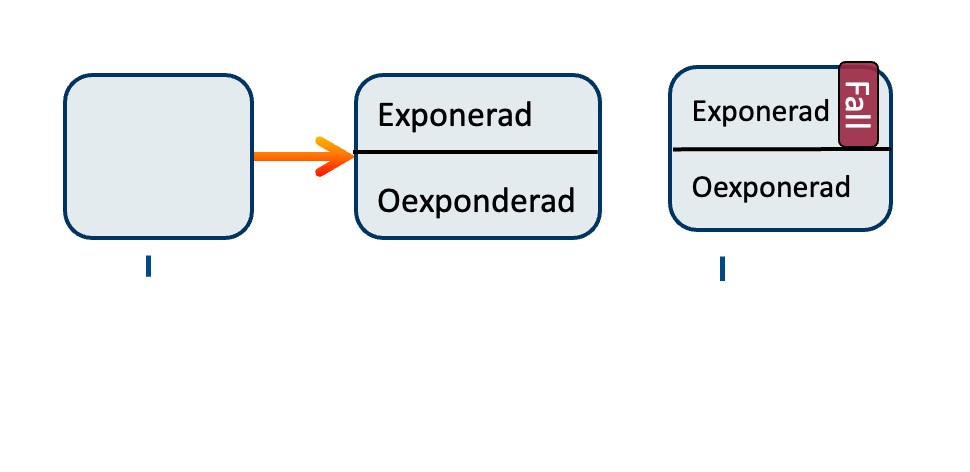
Fall-kontroll-studie
Prospektiva kohortstudierkan ibland vara omöjliga att genomföra- Tiden från exponering till sjukdom kan vara mycket lång
- Börjar röka som tonåring -> hjärtsjukdom som vuxen; behandlas för leukemi som barn -> påverkar fettfri kroppsmassa som vuxen
- Tiden från exponering till sjukdom kan vara mycket lång
- Sjukdomen är mycket
sällsynt: antag 5/100 000. För att identifiera “tillräckligt” många fall (som krävs för statistisk styrka) kan det behövas en kohort på 1 000 000 deltagare - Ett alternativ är
Fall-kontroll-studie
En grupp fall och en grupp jämförbara kontroller (inte fall), titta tillbaka i deras förflutna; jämför fall mot kontroller hur ofta riskfaktorn är närvarande
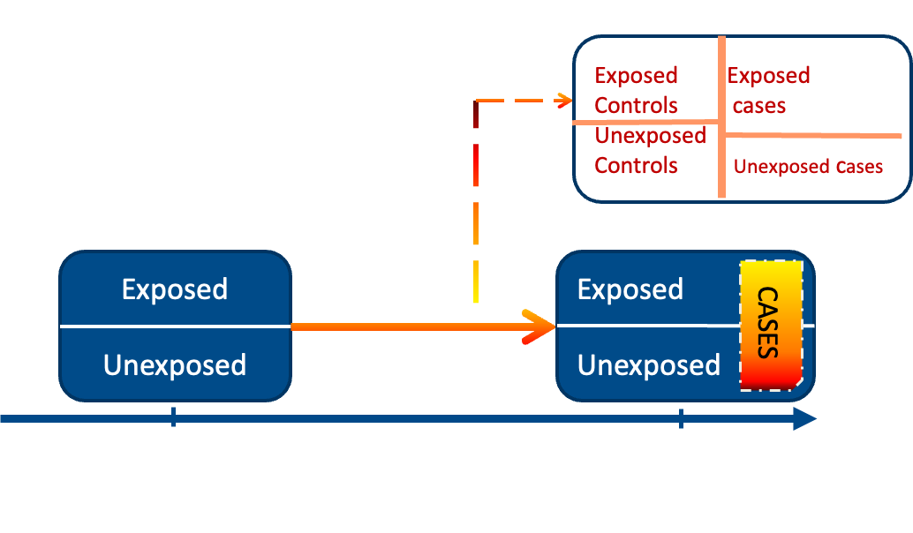
- Fall-kontroll-studier börjar med en grupp
falloch inkluderar sedan ett slumpmässigt urval avkontroller(ingen sjukdom under studien!) - Bestäm tidskomponenten: titta tillbaka 20 år, 1 år, 1 månad?
- Kartlägg exponering för varje fall och kontroll:
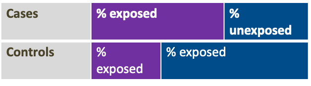
- Beräkna
-
oddskvoter -
jämför oddsen för att vara exponerad bland fall med oddsen för exponering bland kontroller
Sist men inte minst …
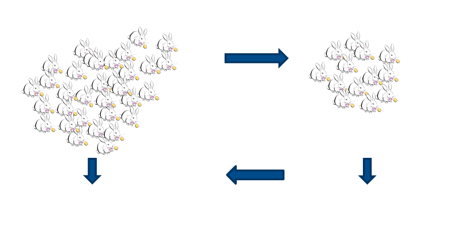
Skit in, skit ut!
Oavsett vilken studieutformning som väljs kommer slutsatserna endast vara giltiga om du valde “rätt” kaniner att titta på!
17 Stickprovsstorlek
Relevans?
- Om vi på förhand kan styra hur många studieobjekt som inkluderas
- Hur många möss behöver vi offra?
- Hur många enkäter behöver vi skicka ut?
- Är det någon idé att journalgranska om vi inte har fler än max 100 journaler?
- INTE relevant för att i efterhand bortförklara varför vi inte uppnådde statistisk signifikans!
- Behövs sällan vid t ex registerstudier
Stickprovsstorlek
- Grupperna är för små (för litet stickprov):
- \(H_0\) förkastas inte, även om en relevant skillnad finns (typ I-fel).
- Resultaten kan inte användas för att säga att det finns någon skillnad.
- Grupperna är för stora:
- Slöseri med resurser.
- Studien kan visa skillnader som inte har någon praktisk betydelse, kliniskt irrelevant.
- Risk för lägre datakvalitet på grund av stor organisation?
Styrka
- Du har en hypotes (\(H_1\)): det finns en skillnad i blodtryck mellan överviktiga och normalviktiga.
- Vad krävs för att förkasta \(H_0\) (ingen skillnad)?
- Vad man inte vill, är att det ska sluta med en kostsam, för patienterna riskfylld, tidskrävande studie som inte fann något intressant resultat.
Antalsberäkning
för jämförelse av medelvärden
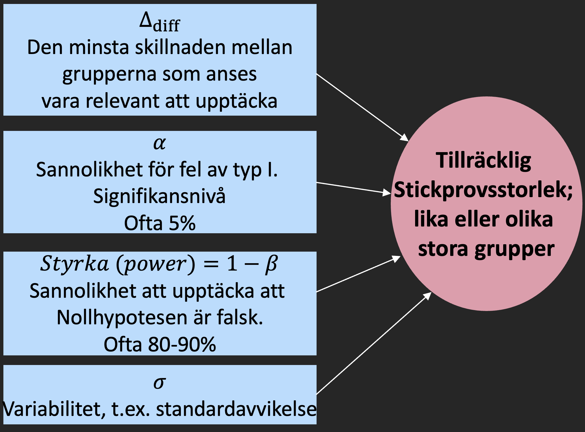
Exempel: medelvärde
- Vi vill studera normalviktiga unga vuxna,
- grupp 1 normalviktiga som barn,
- grupp 2 överviktiga som barn
- Fråga: samvarierar vikten som barn med blodtrycket som vuxen?
- Hypotes: \(H_0: \mu_1 = \mu_2; H_1: \mu_1 \neq \mu_2\)
- Hur många studiedeltagare behövs?
- Du måste göra antaganden om den minsta skillnad du vill kunna hitta samt variabiliteten.
- Kliniskt relevant skillnad = 10 mmHg diastolisk: \(\Delta = 10\)
- Varians i population: \(\sigma^2 = 10\)
- Vi antar att det är samma i båda grupperna
- Bestäm signifikansnivå \(\alpha = 0.05 \Rightarrow k_1 = 1.96\)
- styrka \(1-\beta = 0.8 \Rightarrow k_2 = 0.84\)
- \(n \geq 2 \sigma^2 \cdot \left( \frac{k_1+k_2}{\Delta}\right)^2 = 2 \cdot 10 \cdot \left( \frac{1.96 + 0.84}{10}\right)^2 = 1.568\)
- Minsta urvalsstorlek är 2 per grupp => 4 totalt
| \(\alpha\) | k1 | \(1- \beta\) (power) | k2 |
|---|---|---|---|
| 0.001 | 3.29 | 0.8 | 0.84 |
| 0.01 | 2.58 | 0.9 | 1.28 |
| 0.05 | 1.96 | 0.95 | 1.96 |
| 0.99 | 2.33 |
- Detta betyder att skillnaden i medelvärde måste vara minst 10 mellan grupperna för att vi ska kunna förkasta \(H_0\) med \(n = 4\)
- Är den faktiska skillnaden mindre så krävs ett större stickprov
- Anta \(\Delta = 5\)
- \(n \geq 2 \sigma^2 \cdot \left( \frac{k_1+k_2}{\Delta}\right)^2 = 2 \cdot 10 \cdot \left( \frac{1.96 + 0.84}{5}\right)^2 = 6,272\)
- krävs 7 per grupp (avrunda alltid uppåt!), dvs 14 totalt.
Exempel: Andel
- Studentkåren vill skatta andelen missnöjda studenter vid Sahlgrenska akademin.
- Vill att ett 95 % konfidensintervall ska ha en bredd på 12 procentenheter.
- en felmarginal (margin of error): \(m = 0.06\)
- Anta 25 % är missnöjda: \(p = 0.25\)
- \(n = p(1-p) / SE^2(p)\)
- där \(SE(p) = m/k_1 = 0.06/1.96 \approx 0.031\)
- \(n = 0.25 (0.75)/0.031^2 \approx 200\)
- Vad betyder det?
- Fråga 200 studenter?
- Samla in 200 svar?
Exempel: Olika andelar
- Vi är intresserade av andelen som återgår till arbete bland canceröverlevare.
- Två grupper, Grupp 1 vs Grupp 2 med andelar \(p_1\) resp \(p_2\)
- \(H_0: p_1 = p_2; H_1: p_1 \neq p_2\)
- \(\alpha = .05\)
- \(1-\beta = .8\) (power)
- Hur stort stickprov behövs för att detektera att andelen i grupp 1 är 60 % jmfrt med 40 % I grupp 2?
SPSS
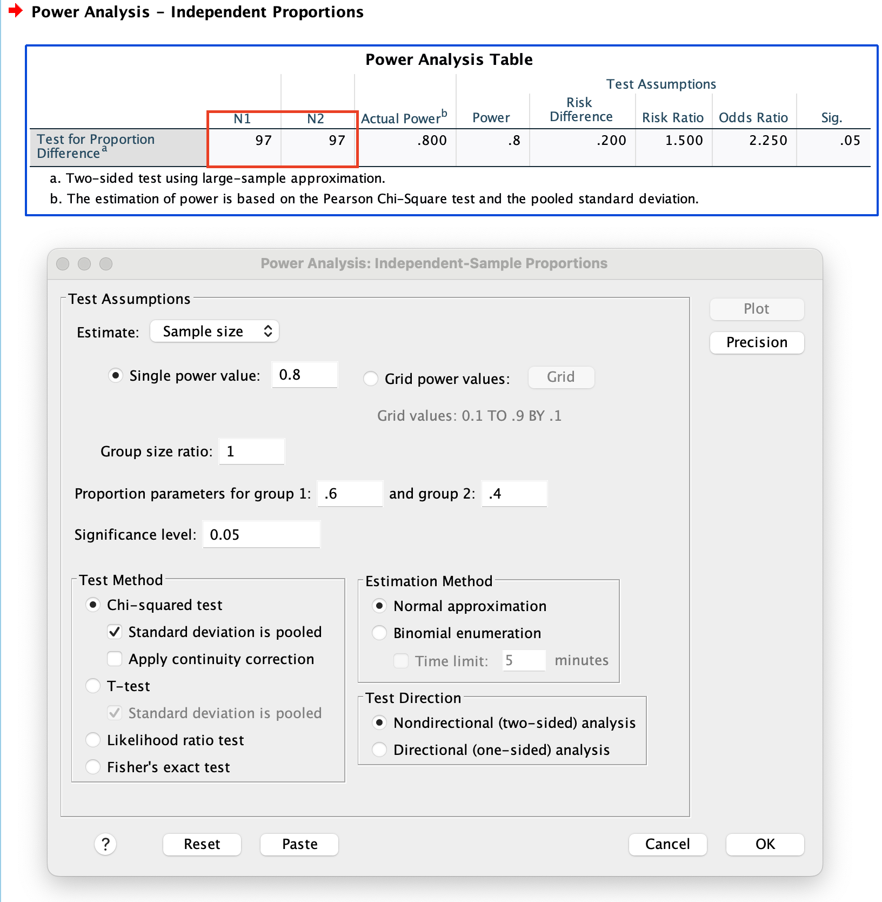
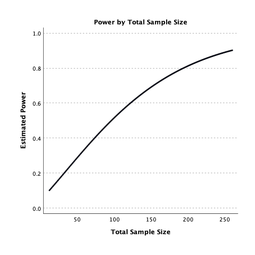
Finns även flera på nätet, t ex OpenEPI